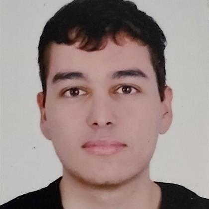

Nací un primero de octubre en Bogotá, Colombia 👶🇨🇴
Desde pequeño siempre me han gustado mucho los deportes, además no fui de esos niños que odiaba los vegetales, sino que me encantaban y las frutas también 🏀⛹️
Me cambié de colegio, pues mi colegio anterior era Calendario B y muy estricto, mi mamá cuenta que me compraba de a 15 cuadernos al semestre, y yo con 5 o 6 añitos 🏤
Perdí mi primera materia, y desde aquí me ha ido mal, siempre me llevé algo 🙎
En cuarto, descubrí mi pasión por los videojuegos 🎮
Fui al mundial de Brasil, de las mejores experiencias de mi vida, con 10 años ⚽
Me empecé a interesar por el mundo de la competición en los videojuegos 🌀 Desde acá empecé a estar mal mentalmente 😞
Perdí noveno ✗...
Pandemia, como es de esperarse, de los peores años de nuestras vidas 😷 Por otro lado, salió Valorant
Cambio de colegio, graduación y contrato semiprofesional 🎓
Entré a la universidad y contrato profesional 👨💻
Aquí donde estamos, hace una semana que ya no estoy en equipo y quién sabe si lo vuelva a hacer... 👨🎓
Hay muchas cosas a las que me gustaría dedicarme pero aún no estoy seguro de ninguna... 😶
Espero poder compartir muchas materias y tiempo con mis panas <3
Que cada uno vaya viendo electivas más específicas de lo que a ellos les gusta de la informática 💻
¿En qué me veo? Posiblemente en alguna empresa extranjera viviendo afuera, haber podido escapar de Colombia
Me interesa: 1. Desarrollo de software 2. Ciberseguridad 3. IA 4.Videojuegos
Antes o durante del trabajo estaría dispuesto a hacerlo(s)
Para resumir, ¿quién soy?:
La foto que siempre uso para todo:

Soy un chico sin orígenes humildes, que ya ha logrado un par de cosas y espera llegar a mucho más. Soy bueno para cosas tanto que tienen que ver con al carrera y que no, como hablando en público, pues las habilidades sociales en ingeniería no suelen ser muchas. Crecí en un buen ambiente en casa, pero con mucha comparación entre mis hermanas y yo, pues ellas eran muy buenas académicamente y yo... perdí un año. Soy una persona muy introspectiva, pienso mucho, me la puedo pasar horas sin hacer nada productivo pero por lo menos pensé👍. En fin, de aquí a 10 años aún no tengo un plan fijo, pero sí hay muchas cosas que me gustaría hacer y espero poder lograrlas, tengo toda la motivación y las ganas, aunque eso no siempre es suficiente (...)